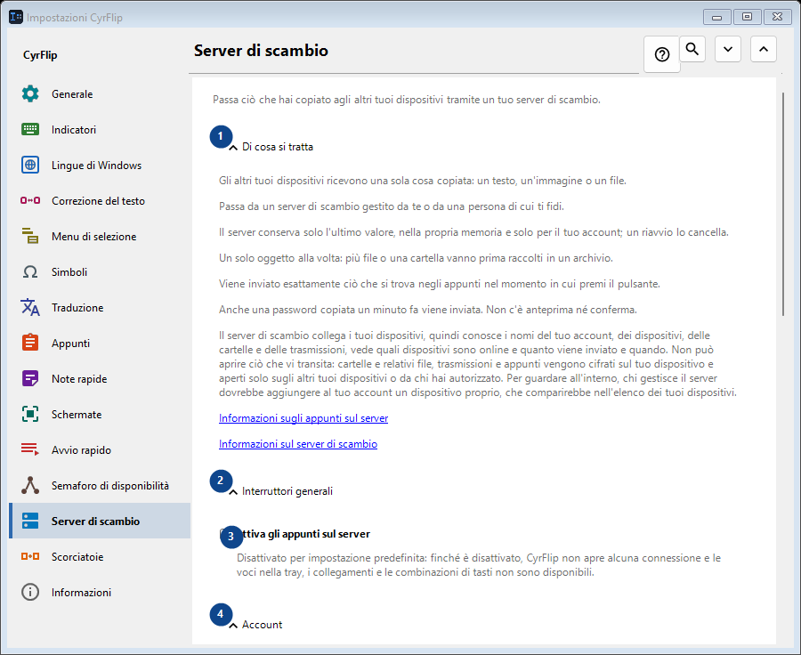
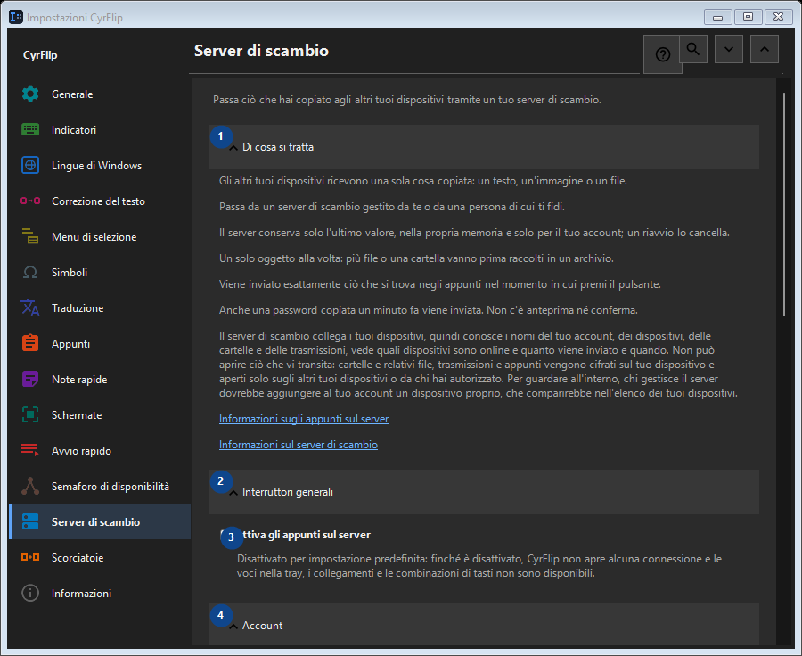

Server di scambio
A cosa serve
Passa ciò che hai copiato agli altri tuoi dispositivi tramite un tuo server di scambio.


Ordine delle operazioni
Le impostazioni si applicano subito. Non serve un ordine preciso; usa i gruppi qui sotto.
Elementi
1. Di cosa si tratta
Usa questo comando per l’azione indicata. Leggi ogni richiesta di conferma prima di accettare.
Le tue scorciatoie2. Interruttori generali
Usa questo comando per l’azione indicata. Leggi ogni richiesta di conferma prima di accettare.
Le tue scorciatoie3. Attiva gli appunti sul server
Disattivato per impostazione predefinita: finché è disattivato, CyrFlip non apre alcuna connessione e le voci nella tray, i collegamenti e le combinazioni di tasti non sono disponibili.
Le tue scorciatoie4. Account
Usa questo comando per l’azione indicata. Leggi ogni richiesta di conferma prima di accettare.
Le tue scorciatoie5. Aggiungi account..
Non disponibile finché «Attiva gli appunti sul server» è disattivato: attiva prima quell'interruttore. Questo elemento non è disponibile. Attiva prima la funzione o seleziona una voce.
Le tue scorciatoie6. Scorciatoie e collegamenti
Usa questo comando per l’azione indicata. Leggi ogni richiesta di conferma prima di accettare.
Le tue scorciatoie7. Invia gli appunti al server
Non disponibile finché «Attiva gli appunti sul server» è disattivato: attiva prima quell'interruttore. Questo elemento non è disponibile. Attiva prima la funzione o seleziona una voce.
Le tue scorciatoie8. Modifica - Invia gli appunti al server
Non disponibile finché «Attiva gli appunti sul server» è disattivato: attiva prima quell'interruttore. Questo elemento non è disponibile. Attiva prima la funzione o seleziona una voce.
Le tue scorciatoie9. Ricevi gli appunti dal server
Non disponibile finché «Attiva gli appunti sul server» è disattivato: attiva prima quell'interruttore. Questo elemento non è disponibile. Attiva prima la funzione o seleziona una voce.
Le tue scorciatoie10. Modifica - Ricevi gli appunti dal server
Non disponibile finché «Attiva gli appunti sul server» è disattivato: attiva prima quell'interruttore. Questo elemento non è disponibile. Attiva prima la funzione o seleziona una voce.
Le tue scorciatoie11. Metti “Invia” sul desktop
Non disponibile finché «Attiva gli appunti sul server» è disattivato: attiva prima quell'interruttore. Questo elemento non è disponibile. Attiva prima la funzione o seleziona una voce.
Le tue scorciatoie12. Metti “Ricevi” sul desktop
Non disponibile finché «Attiva gli appunti sul server» è disattivato: attiva prima quell'interruttore. Questo elemento non è disponibile. Attiva prima la funzione o seleziona una voce.
Le tue scorciatoie13. File ricevuti
Usa questo comando per l’azione indicata. Leggi ogni richiesta di conferma prima di accettare.
Le tue scorciatoie14. Cartella per i file ricevuti dal server
Non disponibile finché «Attiva gli appunti sul server» è disattivato: attiva prima quell'interruttore. Questo elemento non è disponibile. Attiva prima la funzione o seleziona una voce.
Le tue scorciatoie15. Scegli - Cartella per i file ricevuti dal server
Non disponibile finché «Attiva gli appunti sul server» è disattivato: attiva prima quell'interruttore. Questo elemento non è disponibile. Attiva prima la funzione o seleziona una voce.
Le tue scorciatoie16. Apri cartella - Cartella per i file ricevuti dal server
Non disponibile finché «Attiva gli appunti sul server» è disattivato: attiva prima quell'interruttore. Questo elemento non è disponibile. Attiva prima la funzione o seleziona una voce.
Le tue scorciatoie